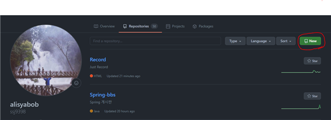
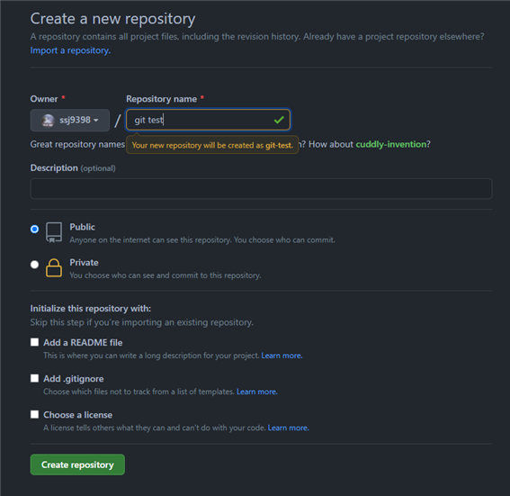
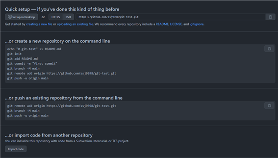
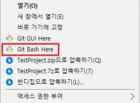
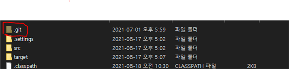
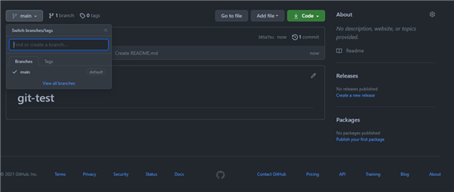

Git
Git & GitHub 시작하기

GitBlog(jekyll +Ruby +Linux + GitHub)

Git 간단 설명
1. github에 repository를 만들어 줍니다.
- 저장소? 프로젝트를 한다고 할때 프로젝트 폴더가 있듯이 github에도 마찬가지로 repository라는 것을 만들어 줍니다. 

- public : 공개
- private : 비공개
public으로 repository 생성 이후
2. github에 설명 알아보기

위 화면이 뜨게 되는데 하나씩 살펴보기 전에 모든 아래 작업은 git bash를 통해 진행됩니다.
https://git-scm.com/downloads 설치 url

바탕화면에서 우클릭 했을 때 이렇게 나와야합니다.
위 이미지에 있는 내용 하나씩 살펴보자면
git init
git init -> 이것은 내 pc에 새로운 프로젝트 폴더를 생성 했다고 했을 때 그 폴더를 git과 연동하기 위한 작업입니다.
프로젝트 폴더 우클릭하여 git-bash here를 누르고 git init을 입력하면 됩니다.

위와 같은 숨김폴더가 생성 됩니다.
git add
git add README.md 이것은 README.md라는 마크다운 파일을 추가하기 위한 것인데 없어도 문제되는 것은 없으며
README.md는 그냥 설명을 적는 곳이라 보시면 될 것 같습니다.
git commit
git commit –m “message” 이것은 커밋할 때 뭐라고 커밋을 할것이냐 즉 수정 및 추가 내용
ex) html에 h1이라는 제목을 추가 했다고 할 때 git commit –m “제목 추가”

위 main처럼 현재 branch를 확인해두면 좋습니다.
branch 설명
git branch –m main 이것은 우선 branch가 무엇인지 대충 설명하자면
프로젝트를 할 때 5명이 있다
5명이 한 것을 합쳐서 하나의 프로젝트가 완성이 되는데
이때 이 5명은
ex) branch –m a
branch –m b
branch –m c
branch –m d
branch –m e
각자 작업을 하고 pull request를 하게 됨
이렇게 되고 main or master라는 브랜치에 머지하여 합치게 됩니다.
git remote
git remote add origin 주소 이 부분은 해당 주소 repository와 연결을 하겠다 라는 뜻입니다.
git push
git push –u origin main 이부분은 main이라는 브랜치에 푸쉬 하겠다는 의미입니다.
이미 local 프로젝트와 git이 연결 된 상태(프로젝트 진행 중 매번 git 연결 할 필요 없이)에서 추가 작업을 했다면
git status를 이용 하여 현재 상태 확인
만약 로컬과 git 프로젝트 내용이 상이하다면 git pull을 이용해 내려받앙야함
git add file_name or git add .(추가된 전체 내용)를 이용하여 추가를 해주고(add뒤에 . 띄어쓰기 하셔야함)
git commit –m “message”
git push or git push –u origin main